| Converting Text data files to .json |
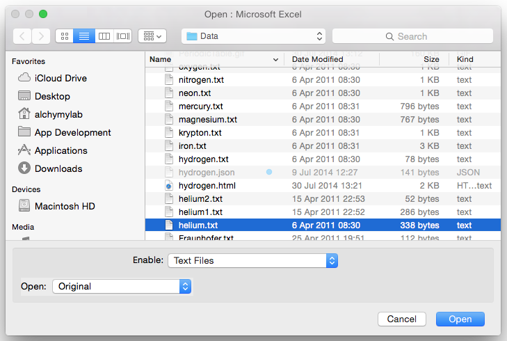
Choose "Fixed WIdth"
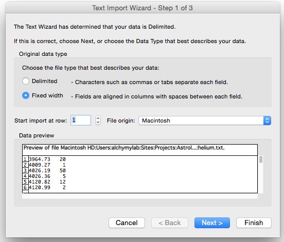
Ensure the separator splits the two columns correctly.
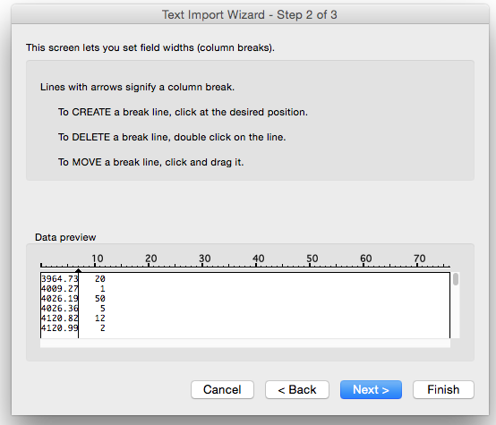
Choose "General".
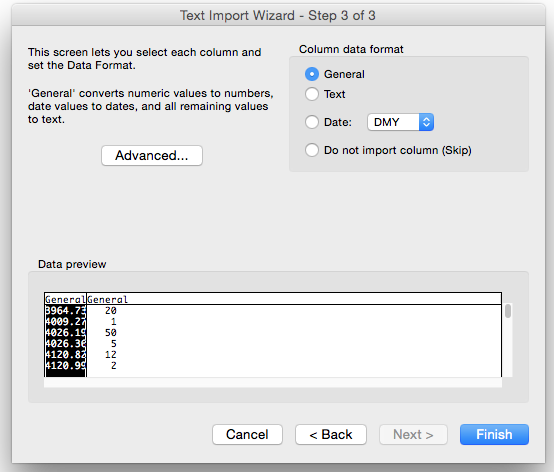
Figures then appear in the two columns below in the sheet.
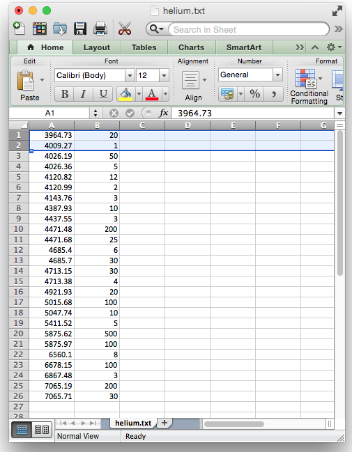
Insert two rows at the top, and one column to the left of "A" and one to left of "B".
Update "A3', "C3" and "E3' as below, then copy these characters all the way down the colums to the last row of figures only.
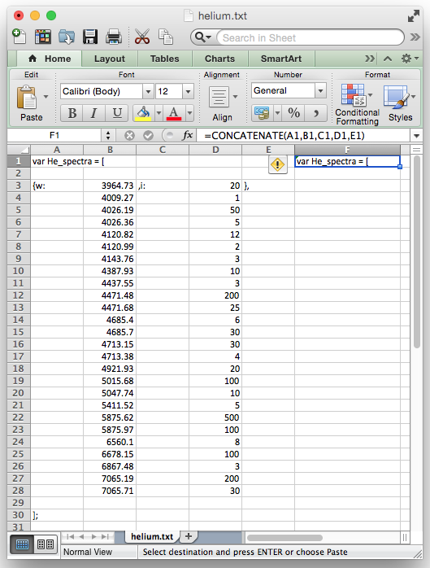
Then make sure last closing "}" has no comma after it.
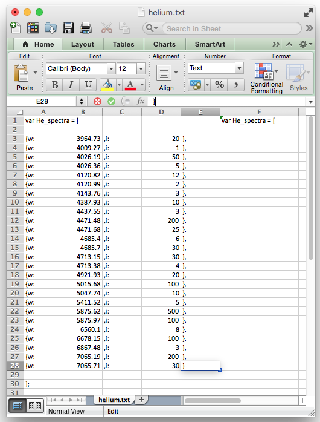
Select and copy cell "F1" and paste down column F to last row of column, then select and copy entire column "F".
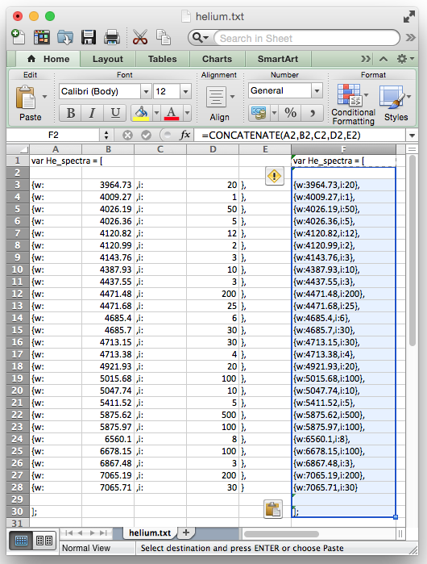
Paste into adjacent sheet "+" using "Paste Special" to paste values only.
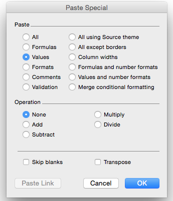
Sheet column "A" then appears as below.
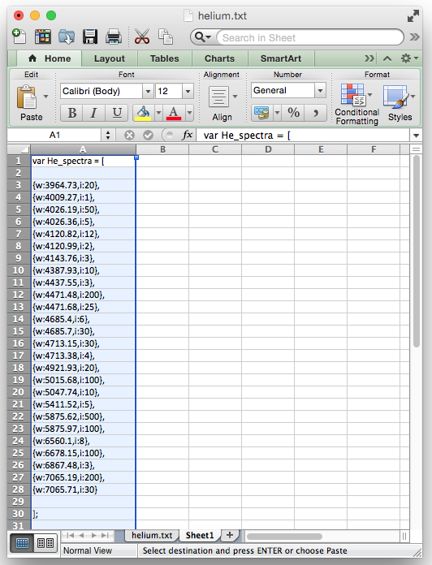
Save as a json extension file.
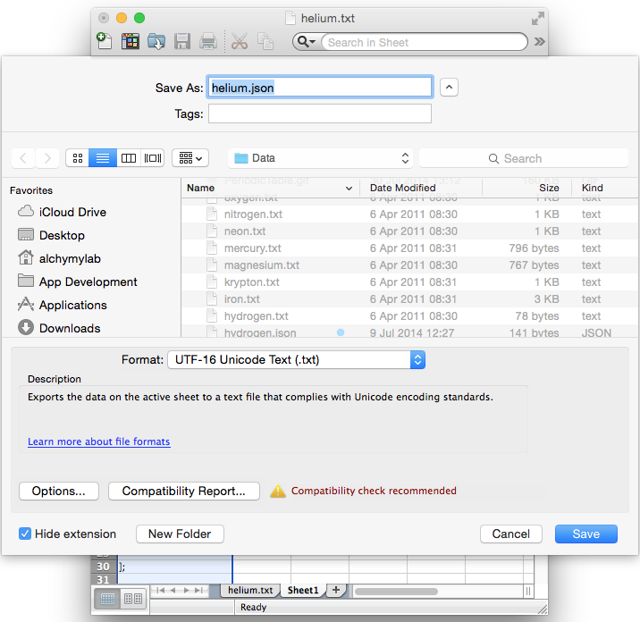
Select "Use Both".
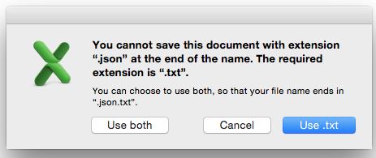
Select "Save Active Sheet"
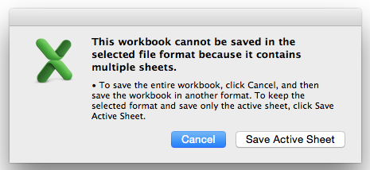
Select 'Continue".
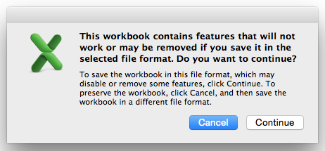
Open the file with say "TextWrangler".
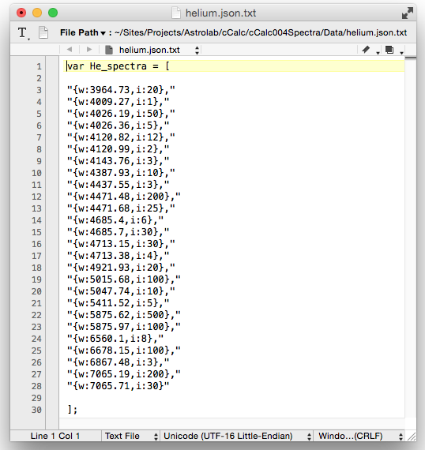
Use "Find" to select all the " characters and replace with 'nothing'.
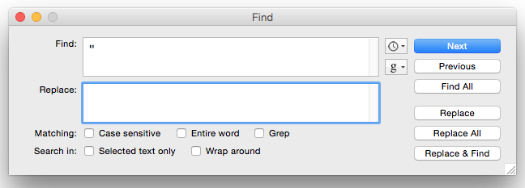
Save the file and rename the file deleting the ".txt" extension to leave ".json" OR as a pure ".json' file extension and delete the old file. Open the file in say Dreamweaver" and it should show the correct format for "json" data format.
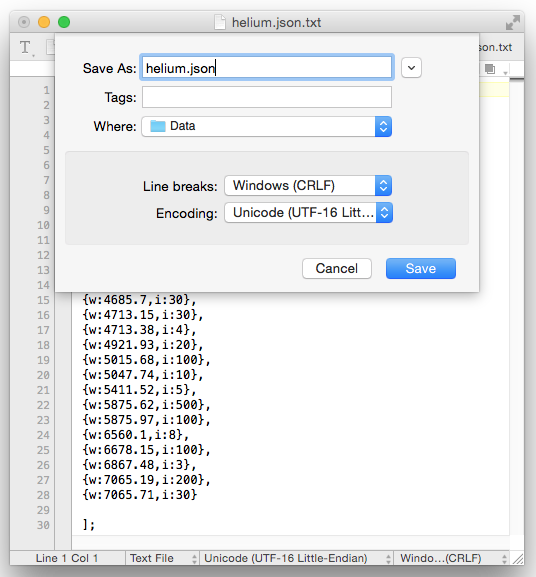